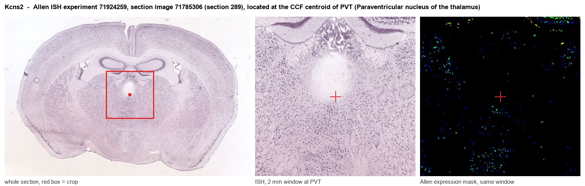
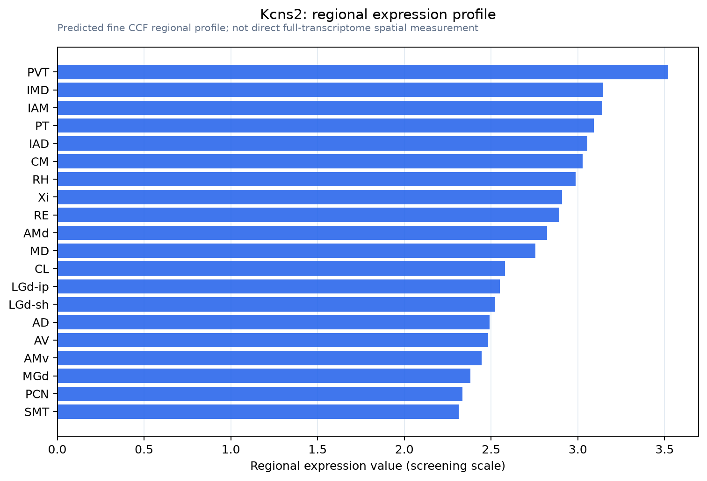

Kcns2
Delayed-rectifier potassium channel regulatory subunit KCNS2 (Delayed-rectifier K(+) channel alpha subunit 2) (Delayed-rectifier potassium channel subunit Kv9.2) (Potassium voltage-gated channel subfa
Spatial tier: REGION_BIASED · Class: ION_CHANNEL · Top region: PVT (Paraventricular nucleus of the thalamus) · Positive regions: 35/554
Function in PVT: evidence, prediction, innovation
- Gene function
- KCNS2 encodes Kv9.2, an electrically silent (KvS) potassium channel subunit. Kv9.2 cannot form channels by itself; it co-assembles with Kv2.1/Kv2.2 delayed-rectifier subunits and shifts their voltage dependence and kinetics, tuning how strongly the delayed rectifier repolarises a neuron during repetitive firing. Kcns2 expression is largely restricted to the nervous system, and a KCNS2 variant has been linked to essential tremor.
- Region function
- The paraventricular nucleus of the thalamus is a midline thalamic hub that integrates hypothalamic and brainstem state signals and projects to nucleus accumbens, prefrontal cortex, amygdala and BNST, controlling arousal, stress responses, salience and appetitive/aversive motivation.
- Published in this region
- inferred No region-specific literature found. Salinas 1997 reported that Kv9.2 mRNA is high and selective in the nervous system, and Stewart 2025 showed with Kv2-inhibitor combinations that native neuronal conductances behave as Kv2/KvS heteromers, but no study has examined Kv9.2 in midline thalamus.
- Predicted function
- Prediction: Kv9.2 in PVT neurons should set the properties of the Kv2-based delayed rectifier that limits repetitive firing, so its enrichment would make PVT cells better able to sustain high tonic firing during arousal and salient events. Knockdown or a Kv2/KvS blocking strategy is predicted to broaden spikes, increase burst probability and raise PVT excitability, translating into fragmented wakefulness, exaggerated cue-evoked accumbens drive and heightened stress reactivity. Conversely, over-expression should shift PVT towards low-frequency, burst-dominated output.
- Innovation
- ★★★★★ 5/5 Silent KvS subunits are an under-recognised source of regional firing specialisation and have never been examined in the paraventricular thalamus.
- Tools
- Kcns2 knockout/mutant mouse models; guangxitoxin-1E and RY785 as Kv2 blockers (no Kv9.2-selective drug); AAV-shRNA knockdown; PVT targeting with Slc17a6-Cre or Gck-Cre.
- References
Direct evidence located at the region

Allen ISH experiment 71924259, section image 71785306 (section 289): the section that contains the CCF centroid of Paraventricular nucleus of the thalamus according to the Allen image-to-atlas alignment (reference_to_image), with a 2 mm window around that point. Left: whole section, red box = window. Middle: ISH signal. Right: Allen's expression-mask view of the same window. open this image in the Allen viewer
Direct spatial evidence

Regional expression figure

Predicted WMB × fine-CCF profile; not direct full-transcriptome spatial measurement.
Spatial profile
Evidence and specificity
- Evidence status
- PREDICTED_FINE
- Direct sources
- None; predicted localization only
- Exclusive threshold
- 12 positive regions out of 554
- Spatial specificity
- 0.314
- Top-region fraction
- 0.042
- Filter status
- PASS
Interpretation limits
- Cell-type-to-region projection is imputed expression, not direct spatial measurement.
- Adult reference atlases do not establish stability across age, sex, strain, state, or disease.
- Transcript abundance does not guarantee protein abundance or genetic-tool performance.